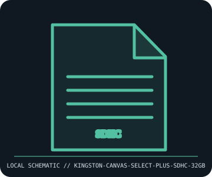

[ REMOVABLE MEDIA // INDIVIDUAL RECORD ]
Kingston Canvas Select Plus SDHC 32 GB Card
Kingston Canvas Select Plus SDHC UHS-I card, 32 GB SKU. This entry describes the identified medium or reader, not a bundled drive/media pair; exact capacity and compatibility are model- and host-dependent.

IDENTIFICATION: Record the full label, manufacturer part number, revision/date code, format markings, and packaging. Product-family names alone do not identify capacity generation or supported drive.
Format and compatibility
| Catalog subcategory | Flash drives and memory cards |
|---|---|
| Catalog identity | Kingston Canvas Select Plus SDHC 32 GB Card |
| Format / era | Kingston Canvas Select Plus SDHC UHS-I card, 32 GB SKU |
| Media/device distinction | This record is the removable medium only; the compatible drive is separate and not included. |
| Capacity / interface | 32 GB full-size SDHC card; Kingston markets the Canvas Select Plus family as UHS-I, Speed Class 10 / U1 for many 32 GB SKUs. Manufacturer maximum read/write ratings vary by generation and capacity. |
| Compatibility | Use in an SDHC-compatible SD slot; SDHC means over 2 GB to 32 GB inclusive and commonly FAT32. A UHS-I card is backward-compatible with supported lower-speed SD interfaces, but camera device lists, host capacity limits, and filesystem support govern. |
| Variant caveat | Canvas Select Plus label is a family rather than one fixed speed SKU. Check complete Kingston part number and printed speed symbols; not every device supports SDXC, UHS bus modes, or 32 GB. |
Media care and preservation
Protect contacts from oils and moisture, store in a case, and avoid flexing or hot-swap during writes. Format only after backup, using the camera/device formatter when required. Verify card identity and capacity; maintain checksummed copies on separate storage.
- Preserve original packaging, labels, and acquisition/context notes; photograph both sides and record any write-protect state before use.
- Keep valuable contents in at least two independently verified copies on separate storage. Record a checksum and test a restore; removable media alone is not a preservation plan.
Model and version caveats
Canvas Select Plus label is a family rather than one fixed speed SKU. Check complete Kingston part number and printed speed symbols; not every device supports SDXC, UHS bus modes, or 32 GB.
Compatibility statements are limited to the named format/model and published host support. Check manufacturer manual, firmware, regional SKU, and media generation before inserting or writing. A similar connector or cartridge shell is not proof of compatibility.
Sources & further reading
- Kingston — Canvas Select Plus SD cardsManufacturer page for family capacities, speed class, and SKU-dependent performance.
- SD Association — SD standards overviewPrimary reference for SDHC capacity, UHS-I, and speed-class symbols.
Sources identify the relevant standard, manufacturer, or product family. Where an archived SKU-specific datasheet is unavailable, the exact label/manual and supported host list take precedence over family-level marketing claims.